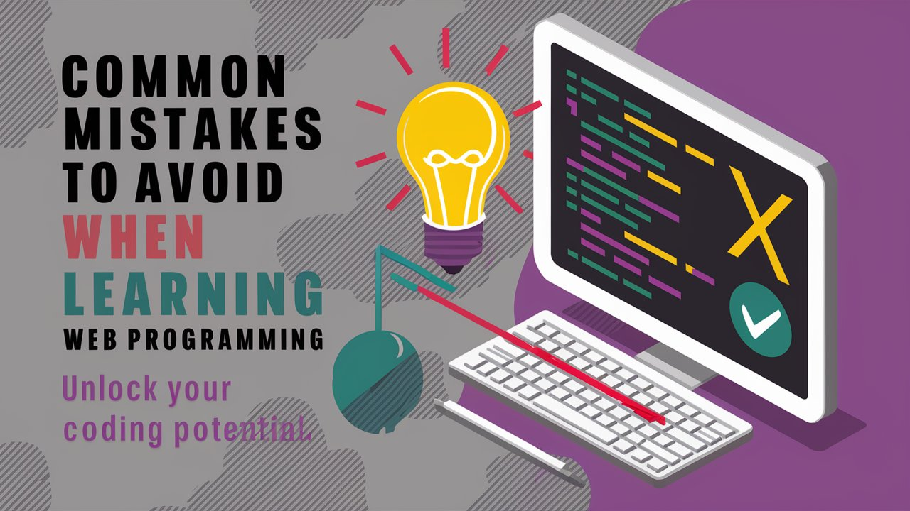

Kesalahan Umum yang Harus Dihindari Saat Belajar Web Programming

Belajar web programming bisa menjadi perjalanan yang menantang namun sangat bermanfaat. Seperti belajar keterampilan baru lainnya, ada berbagai kesalahan yang sering dilakukan oleh pemula yang dapat menghambat kemajuan mereka. Berikut adalah beberapa kesalahan umum yang harus dihindari saat belajar web programming dan bagaimana cara mengatasinya.
Daftar Isi
- Tidak Menguasai Dasar-Dasar Terlebih Dahulu
- Terlalu Banyak Belajar Teori, Kurang Praktik
- Mengabaikan Pentingnya Debugging
- Tidak Menggunakan Version Control
- Belajar Secara Tidak Terstruktur
- Tidak Memanfaatkan Sumber Daya Komunitas
- Menyerah Terlalu Cepat
- Mengabaikan Best Practices
- Tidak Membuat Proyek Nyata
- Tidak Meminta Umpan Balik
- Kesimpulan
Tidak Menguasai Dasar-Dasar Terlebih Dahulu
Kesalahan
Langsung melompat ke framework atau library canggih tanpa memahami dasar-dasarnya.
Solusi
Pastikan Anda memiliki pemahaman yang solid tentang HTML, CSS, dan JavaScript sebelum
mencoba teknologi yang lebih maju seperti React atau Angular. Dasar yang kuat akan
mempermudah Anda mempelajari konsep yang lebih kompleks.
Terlalu Banyak Belajar Teori, Kurang Praktik
Kesalahan
Menghabiskan terlalu banyak waktu untuk membaca buku atau menonton tutorial tanpa
menerapkannya.
Solusi
Segera setelah mempelajari konsep baru, cobalah untuk menerapkannya dalam proyek kecil.
Praktik langsung akan memperkuat pemahaman Anda dan membantu Anda mengingat lebih lama.
Mengabaikan Pentingnya Debugging
Kesalahan
Merasa frustrasi dan menyerah ketika menghadapi bug atau kesalahan dalam kode.
Solusi
Anggap debugging sebagai bagian penting dari proses belajar. Pelajari cara menggunakan alat
debugging yang tersedia di browser Anda dan jangan takut untuk mencari solusi di forum atau
dokumentasi.
Tidak Menggunakan Version Control
Kesalahan
Tidak menggunakan sistem version control seperti Git untuk melacak perubahan pada kode Anda.
Solusi
Pelajari dasar-dasar Git dan GitHub. Ini akan membantu Anda melacak perubahan, bekerja
secara kolaboratif, dan menghindari kehilangan kode penting.
Belajar Secara Tidak Terstruktur
Kesalahan
Mempelajari topik secara acak tanpa rencana yang jelas.
Solusi
Buatlah rencana belajar yang terstruktur. Tentukan topik apa yang ingin Anda pelajari dalam
jangka waktu tertentu dan ikuti kurikulum yang sistematis, seperti yang disediakan oleh
platform belajar online.
Tidak Memanfaatkan Sumber Daya Komunitas
Kesalahan
Belajar sendirian tanpa bergabung dengan komunitas atau forum diskusi.
Solusi
Bergabunglah dengan komunitas online seperti Stack Overflow, Reddit, atau grup belajar
lokal. Anda dapat belajar banyak dari pengalaman orang lain dan mendapatkan bantuan saat
menghadapi kesulitan.
Menyerah Terlalu Cepat
Kesalahan
Mudah menyerah ketika menghadapi tantangan atau konsep yang sulit.
Solusi
Tetaplah konsisten dan jangan mudah menyerah. Web programming membutuhkan waktu dan latihan.
Beri diri Anda waktu untuk memahami dan menguasai konsep-konsep baru.
Mengabaikan Best Practices
Kesalahan
Tidak mengikuti praktik terbaik dalam menulis kode, seperti penamaan variabel yang jelas dan
struktur kode yang rapi.
Solusi
Pelajari dan terapkan best practices dalam kode Anda. Ini termasuk menulis kode yang bersih,
terdokumentasi dengan baik, dan mudah dipahami oleh orang lain.
Tidak Membuat Proyek Nyata
Kesalahan
Hanya mengikuti tutorial tanpa membuat proyek nyata.
Solusi
Buatlah proyek nyata yang bisa menunjukkan kemajuan Anda. Misalnya, buatlah portofolio
online, blog, atau aplikasi sederhana. Ini akan memberi Anda pengalaman praktis dan
portofolio yang dapat ditunjukkan kepada calon pemberi kerja.
Tidak Meminta Umpan Balik
Kesalahan
Tidak mencari atau menerima umpan balik atas kode yang Anda tulis.
Solusi
Mintalah umpan balik dari mentor, teman, atau komunitas. Umpan balik yang konstruktif akan
membantu Anda memperbaiki kesalahan dan meningkatkan keterampilan Anda.
Kesimpulan
Menghindari kesalahan-kesalahan umum ini dapat membuat perjalanan belajar web programming Anda lebih lancar dan efektif. Fokus pada dasar-dasarnya, praktik secara teratur, dan jangan takut untuk meminta bantuan dan umpan balik. Dengan konsistensi dan dedikasi, Anda akan menjadi web programmer yang handal.